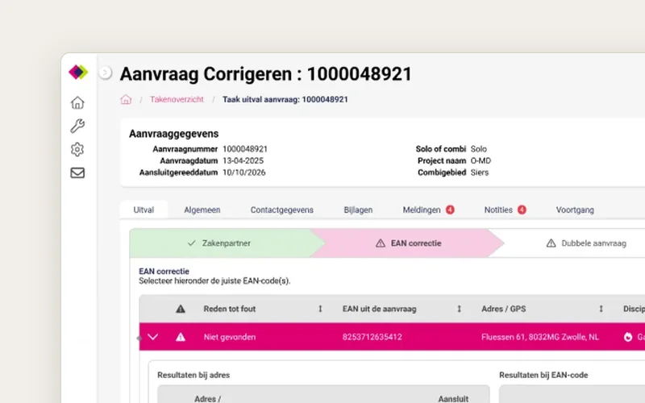
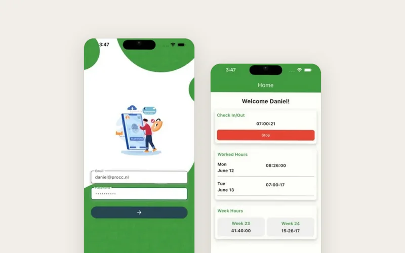

ANVA 6 mee vormgeven: het nieuwe platform voor de verzekeringsketen
ANVA – ANVA 6 · Senior UX en product designer
Projecten in energie, mobiliteit, verzekeringen en zorg. Elke case laat zien welk probleem er lag, wat ik ontdekte, welke keuzes ik maakte en wat het opleverde.
ANVA – ANVA 6 · Senior UX en product designer

Enexis – MIKA · Senior UX en product designer

NS – Developer portal · Senior UX en product designer

Onderlinge Nederland – Klantportaal · Senior UX en product designer · product owner

Woonz – Platform · Senior UX en product designer (lead)

Attenza – Zorgapp · Senior UX en product designer

ProCC – Registratie-app · UX designer
Kortere opdrachten en werk van eerder in mijn loopbaan.
Samenwerken
Ik sta open voor een gesprek over een rol waarin product design, design systems en toegankelijkheid samenkomen. Een mail of LinkedIn-bericht is genoeg.